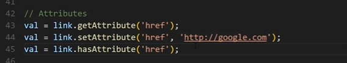
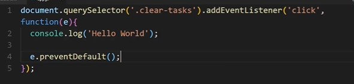

Ref Points Mozilla DOM
Use the MDN website to look for help or see what is relevant today MDN. Also shows browser compatability
You can also use can I use to get browser compatability
The developer tools in the browsers is very helpful, the elements tabs
The e passed into a function is the event object. It gives some great info that but most importantly the target.
The Browser Environment- The DOM
The environment that JavaScript runs in — like a browser, or a server, or even an embedded computer — has a fundamental effect on what it can do. In this stage we'll explore the browser environment, and see how JavaScript can change a webpage right before our eyes.
- Wikipedia is an example of a website that doesnt have any javascript just text, links and images
- Code pen is a website that displays JavaScript. repsonding to clicks of a mouse on the screen
- Javascript will act upon actions
- A web page has many elements on a page, example would be a number on the codepen calcualtor. Once clicked on the element is manipulated or changed.
- The dom standard for document object model - The dom is were all these actions take place.
- The document lives within the window provided by the browser.

- To interact with the DOM you can use developers tools in chrome or something similiar in another browser
- You can type javascript directly into the console. location.ref is javascript to display the URL you are on.
- document.getElementById() is one way you can interact with a element in a web page. The perferred method is document.querySelector() and selecting the element, class or ID in the parenthases.
- A list of all the DOM properties can be seen HERE

- document.scripts returns all script elements in a list, this list is not an array. You will need to change this to an array using Array.from(scripts);
- If you console.log document you will find the complete HTML document listed, this could also be seen in elements in the inspector of the browser.
- An exmaple of interactive javascript is to change the colour of a element when hovered or clicked.
- The DOM is like a map of the web page that javascript can use, illustrations below:

- Javascript uses the above relationships to alter and change the structure and actions of the DOM website

Getting a handle on the DOM While Making Changes
The first step of making a web page interactive is grabbing a hold of elements you want the user to interact with. This is called selection. There are a number of ways to select elements on a web page. Let's explore those you are likely to use most often.
Single Element Selection DOM
- When selecting a element in the DOM it should be stored in a variable.
- Selecting a single element stores one element from the DOM and you can use one of the two methods:
document.getElementById(''); - The HTML element will need to have the ID.
document.querySelector(''); - This is a lot more powerful than the above. You can call the ID or class directly. id is # and class is .
- You can get things from the element using things like document.getElementById('').id; and document.getElementById('').className;
- You can also change the styling by using document.getElementById('').style.background = black;

- To change the content you can use document.getElementById('').textContent = ''; . You can use innerText instead of textContent
- We can also add to the HTML by using document.getElementById('').innerHTML = '';

- You can selected a nested element using document.querySelector('ul li'). This picks up the first bullet point in the list

- The locations where the elements are placed in the DOM are called Nodes, and on the web page, it’s not that only HTML elements get their node, but also the attributes of the HTML elements have their nodes (attribute nodes), every piece of text has its node (text nodes), and there are many other node types. The structural relation of these nodes reflects the structure of the HTML document. Because of that, we can define the relations between the elements on the page as the relations between their nodes in the DOM.
Multiple Element Selection DOM
- You can use document.getElementsByClassName(''); - This will bring back all the elements with that class name in a list

- You can use document.getElementsByTagName(''); This selects all the elements with that tag name, li or div or son on

- The above do not bring back arrays you have to convert them into arrays. Array.from();
- You can use document.querySelectorAll(''); which brings back a node list. Again you will need to convert this to an array
- Selecting even and odd elements

Traversing The DOM
- Traversing The DOM is moving up and down the DOM
- Parents and Children of nodes or what ever we select.
- All items in the DOM are defined as nodes. There are many types of nodes, but there are three main ones that we work with most often:
- Element nodes
- Text nodes
- Comment nodes
- To get a child node of something you can use .childNodes. Returns a node list including text nodes which can be as simple as line breaks
- The above might not work for you as you dont want the text nodes so you can use node.children;. This returns a HTML collection
- childNodes gives us all types of nodes but children gives us just the HTML elements
- You can use properties on the above two getting the name and node type.

- TO get grand children you can use you can use children.children
- .firstChild returns the first node and firstElementChild returns the first element
- As above you can also use .lastChild and lastElementChild
- You can also use parentNode and parentElement
- You can also get siblings using nextSibling; . this is a node and you can use nextElementSibling; for the next HTML element
- You can also use previousSibling or previousElementSibling
Creating Elements
- Create a new HTML element and can add a css class to it. Essentially mnipulaton of the DOM
- You can use document.createElement();. This method creates the HTML element. You place the element you want to create in the parenthases ('li').
- To add a css class to the new element you can use .className - '';
- You can add a id to the new HTML using .id = '';
- To add text to the new HTML element you create a text node document.createTextNode() and append that. node.appendChild(document.createTextNode());, node being the new HTML element and the text you want to insert will be placed into the parenthases of document.createTextNode().
- An exmaple of creating a new HTML element:

Removing or Replacing Elements
- To replace a element create a new element using document.createElement('');.
- Than add a id using .id or a class using .className
- Finally append a text node to the new element using document.createTextNode('TEXT');

- To replace a element you can use replaceChild(NEWELEMENT, OLDELEMENT); In the example below you see card action which is the div the new and old element is in.

- .remove can be used to remove a element

- For attributes for a chosen element you an use .getAttribute('') and .setAttribute('')

Event Listners and The Event Object
- First select the element in the dom, qurySelector can be used
- Once the element has been selected you can use .addEventListner()
- The two things that go in the parenthases in .addEventListner() are event type (maybe a click) and anonymous call back function with a block of code to execute
- To stop the defualt behaviour of the element you can pass in e as the parameter to the function which is the event object. This would look something like e.preventDefault(); which would be placed in the function. The default action would be specified in the href in the HTML.
 - You can also call the event listner by passing the event type and stating a named function later down the code you can specify what that function does
- The better way to do the above, using a named function

Move Events
- Events that occur when the mouse interacts with the HTML document belongs to the MouseEvent Object.
- You have mouse events like click, double click, mouse down, mouse up, mouse enter, mouse leave, mouse over, mouse out.
- Example of using the above:

Input and Form Events
- Like the mouse events you have many input and form events.
- Remember to use e.preventDefault to stop the default behaviour.
- You would want to get the value of the input field you use .value
- Some key events keydown, keyup, keypress, focus, blurr, cut, paste, input, change
Event Bubbling and Delegation
- Event bubbling is the bubbling up of events through the DOM. A event will bubble up through its parents
- An example of event bubbling clicking on a element with an event and this bubbles up and triggers any events on its parents

- Event delegation is were we put the event on the parent and use logic to target a child/gradchild and so on
- An example of DOM delegation is as below were our function picks on al the a tags (X's) on the list page. This also clears all the list items buy looking at the grandparent elements.

Local and Session Storage
Web storage objects localStorage and sessionStorage allow to save key/value pairs in the browser.
- What you set in local storage has to be a string. You will have to convert things like arrays into a string.
- The JSON. stringify() method converts a JavaScript object or value to a JSON string
- The JSON.parse() method parses a JSON string, constructing the JavaScript value or object described by the string.
- The difference between local storage and session storage is local stroage will stay until you clear it out.
- For local storage we use localStorage.setItem('');
- For session storage we use sessionStorage.setItem('');
- You can remove from the local storage using localStorage.removeItem('');
- To get a value from the local storage you can use localStorage.getItem('');
- To clear everything from the local storage you can use localStorage.clear();
- In local storage you can only save one thing at a time so you can save all into an array and JSON.stringify that in